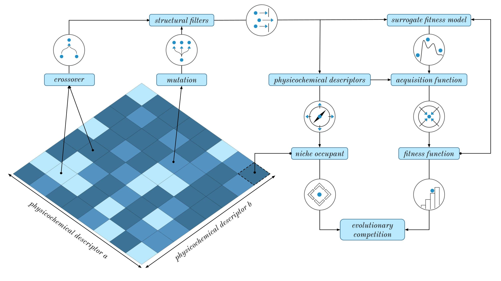

GB-BI Documentation#
Graph-Based Bayesian Illumination (GB-BI) is an open-source software library that aims to make state-of-the-art, quality-diversity optimisation techniques infused with Bayesian optimisation easily accessible to scientific experts in medicinal chemistry and cheminformatics. We provide a modular codebase, novel benchmarks, and extensive documentation.
Overview#
Despite a surge of deep learning papers focused on generative models for small molecules, it remains difficult for these models to out-compete more traditional, rule-based approaches such as genetic algorithms. While comparatively efficient, genetic algorithms have two main drawbacks: susceptibility to stagnation (due to diversity collapse in the evolutionary population) and the lack of exploitation of the information encoded in the fitness values of the different molecules generated by the algorithm throughout its optimisation procedure.
{kind=link}
Bayesian Illumination solves both of these issues by combining the stepping-stone properties of quality-diversity methods (to escape stagnation) with the sampling efficiency of Bayesian optimisation to create a novel generative model that vastly outperforms both deep learning models and genetic algorithms. Details on the theoretical foundation and the general motivation behind this approach can be found in our preprint (ChemrXiv 2024).
Fitness Functions#
GB-BI provides three classes of fitness functions out-of-the-box: fingerprint-based rediscovery, descriptor-based rediscovery, and SAS-modulated docking scores. These fitness functions can and have been used as benchmark tools to probe the efficiency of generative models but also have direct practical applications. Additional fitness functions can easily be added to the codebase.
Task |
Description |
|---|---|
Fingerprint Rediscovery |
A lightweight task focused on molecule rediscovery where the fitness of a molecule is the Tanimoto similarity to the target molecule, based on their respective extended-connectivity fingerprints. Implementation based on Gaucamol, but applicable to generic targets. |
Descriptor Rediscovery |
An alternative molecule rediscovery task, with intermediate computational expense, where the fitness of a generated molecule is defined as the conformer-aggregated similarity to the target molecule. Conformer similarity is based on either USRCAT or Zernike descriptors. |
SAS-Modulated Docking Scores |
A computationally intensive task, utilizing docking methods which evaluate the theoretical affinity between a small molecule and a target protein. To avoid pure exploitation of the docking method, the scores are modulated by the synthetic accessibility of the small molecule. |
Representations#
GB-BI supports several molecular representations that are based on bit vectors or strings. These representations are used for the surrogate models using the Tanimoto kernel from GAUCHE. The string-based representations are turned into a bag-of-characters before being used in the kernel. Note that several of these vector representations are currently not natively supported by GAUCHE.
Representation |
Description |
|---|---|
ECFP |
Extended-Connectivity Fingerprints (ECFP) are circular topological fingerprints that represent the presence of particular substructures. |
FCFP |
Functional-Class Fingerprints (FCFP) are circular topological fingerprints that represent the presence of particular pharmacophoric properties. |
RDFP |
RDKit-specific fingerprints (RDFP) are inspired by public descriptions of the Daylight fingerprints, but differ significantly in practical implementation. |
APFP |
Atom pair fingerprints (APFP) encode all unique triplets of atomic number, number of heavy atom neighbours, aromaticity, and chirality in a vector format. |
TTFP |
Topological torsion fingerprints (TTFP) encode the long-range relationships captured in atom pair fingerprints through information on the torsion angles. |
SMILES |
The simplified molecular-input line-entry system (SMILES) is a widely used line notation for describing a small molecule in terms of short ASCII strings. |
SELFIES |
Self-referencing embedded strings (SELFIES) are an alternative line notation for a small molecule, designed to be used in arbitrary machine learning models. |
Acquisition Functions#
Acquisition functions are heuristics employed to evaluate the potential of candidate moelcules based on their predicted fitness value and the associated uncertainty of a surrogate fitness model (i.e. the Gaussian process). A large literature exists on the topic of acquisition functions and their design. GB-BI supports several of the most well-known and often used acquisition functions.
Acquisition Function |
Description |
|---|---|
Mean |
The posterior mean (mean) is simply the direct fitness value as predicted by the surrogate fitness model. |
UCB |
The upper confidence bound (UCB) balances exploration and exploitation based on a confidence boundary derived from the surrogate fitness model. |
EI |
The expected improvement (EI) considers both the probability of improving on the current solutions and the magnitude of the predicted improvement. |
logEI |
A numerically stable variant of the logarithm of the expected improvement (logEI), which was recently introduced to alleviate the vanishing gradient problems. |
Getting Started#
Core Functionality#
Tutorials#
The best way to get started with GB-BI is to check out our tutorial notebooks. These notebooks provide a step-by-step introduction to the use of GB-BI and its core functionality. We illustrate how it can be used to solve a common optimisation and diversification problems, and how to extend the functionality of GB-BI.
GB-BI’s API#
API Reference
References#
[1] Rogers, D. and Hahn, M., 2010. Extended-connectivity fingerprints. Journal of Chemical Information and Modeling, 50(5), pp.742-754.
[2] Jamasb, A., Viñas Torné, R., Ma, E., Du, Y., Harris, C., Huang, K., Hall, D., Lió, P. and Blundell, T., 2022. Graphein-a Python library for geometric deep learning and network analysis on biomolecular structures and interaction networks. Advances in Neural Information Processing Systems, 35, pp.27153-27167.
[3] Weininger, D., 1988. SMILES, a chemical language and information system. 1. Introduction to methodology and encoding rules. Journal of Chemical Information and Computer Sciences, 28(1), pp.31-36.
[4] Krenn, M., Häse, F., Nigam, A., Friederich, P. and Aspuru-Guzik, A., 2020. Self-referencing embedded strings (SELFIES): A 100% robust molecular string representation. Machine Learning: Science and Technology, 1(4), p.045024.
[5] Probst, D., Schwaller, P. and Reymond, J.L., 2022. Reaction classification and yield prediction using the differential reaction fingerprint DRFP. Digital Discovery, 1(2), pp.91-97.
[6] Schwaller, P., Probst, D., Vaucher, A.C., Nair, V.H., Kreutter, D., Laino, T. and Reymond, J.L., 2021. Mapping the space of chemical reactions using attention-based neural networks. Nature Machine Intelligence, 3(2), pp.144-152.